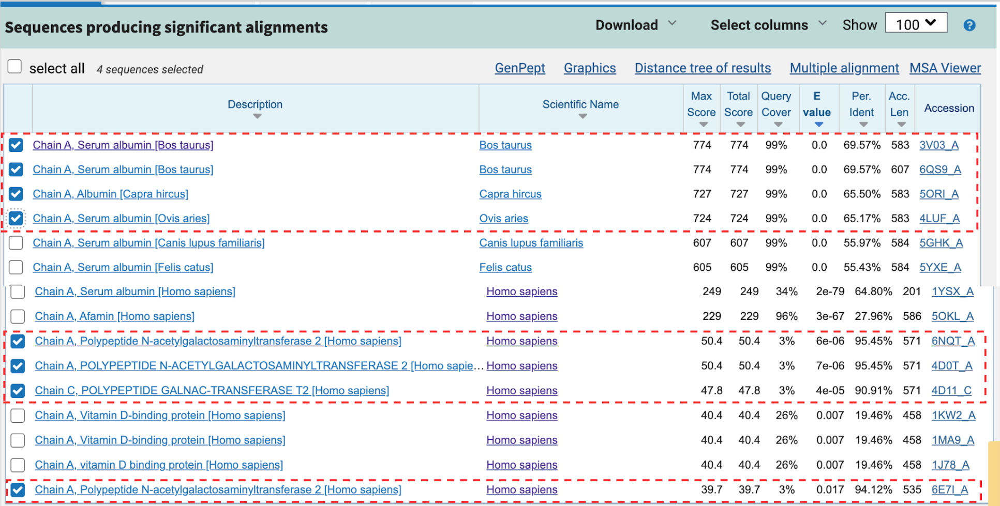
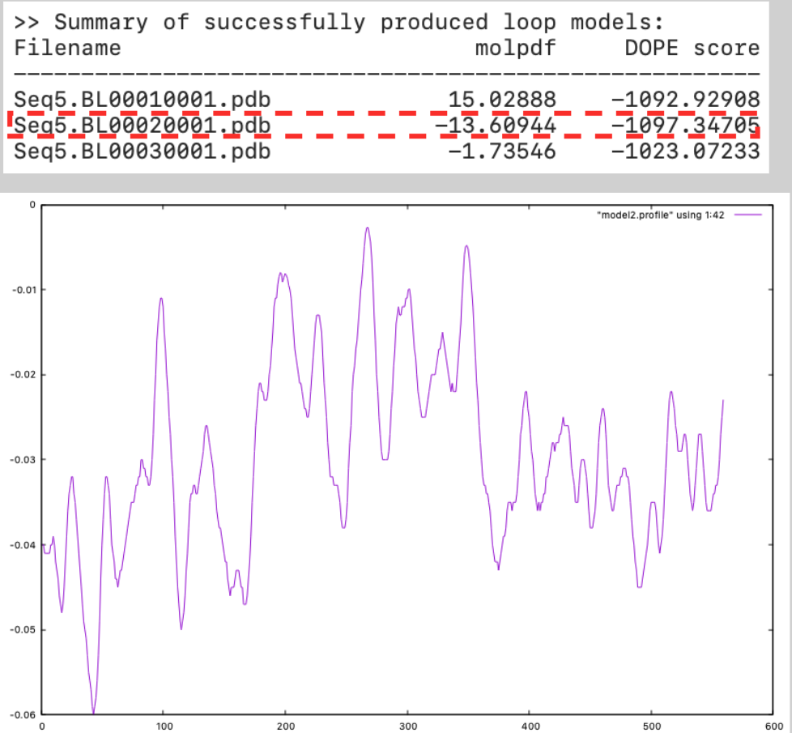
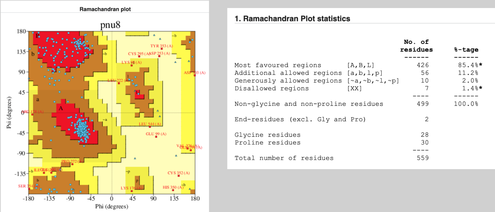
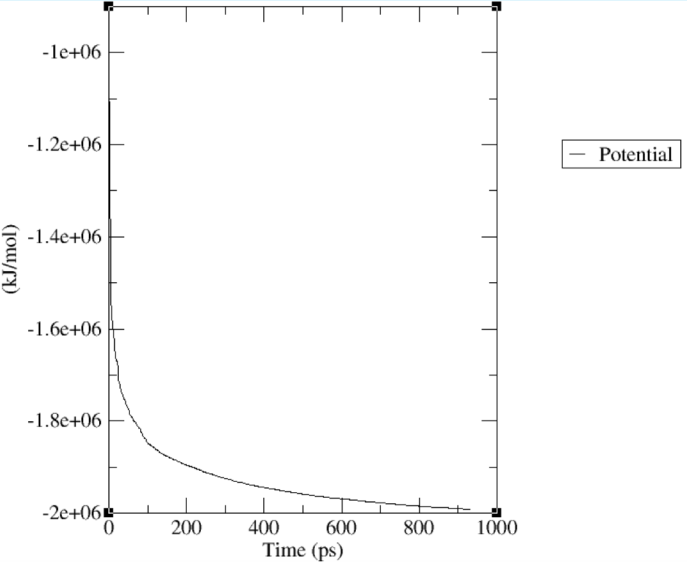
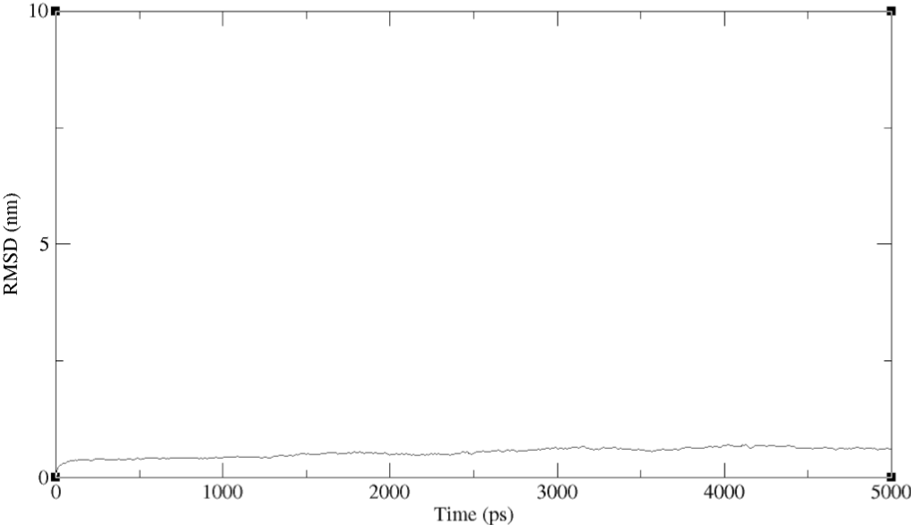
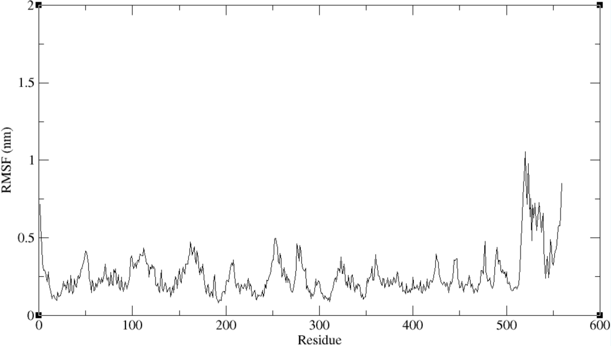
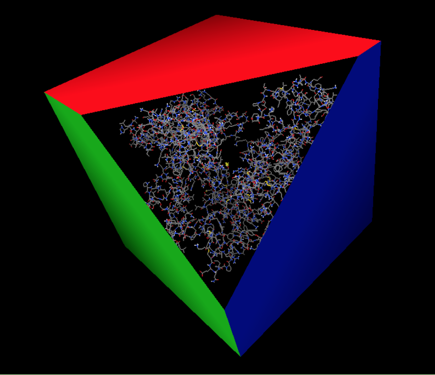

Protein Structure Prediction & Molecular Docking Analysis
Overview
A comprehensive bioinformatics pipeline was developed for protein structure prediction. It includes homology modelling, molecular dynamics simulation using GROMACS, and molecular docking analysis with AutoDock. This pipeline was utilised for identifying potential binding sites and ligand interactions.
Templates Identification
Identified suitable template structures from PDB database for homology modeling
Model Building
- salign.py: Multiple sequence alignment of templates
- align2d.py: Query-template alignment
- model_mult.py: 3D homology model generation
Model Validation
Evaluated model quality using Ramachandran plots and GNU plot analysis
 System Preparation
- Added force field parameters (AMBER99SB-ILDN)
- Solvated system in TIP3P water model
- Neutralized system with ions
Energy Minimization
Performed steepest descent algorithm to remove steric clashes
Production Run
Executed 5ns molecular dynamics simulation (2,500,000 steps)
Simulation Analysis
Evaluated stability using RMSD and RMSF metrics
 System Preparation
- Converted frame with lowest energy level to PDB format
- Prepared protein and ligand in PDBQT format
AutoGrid Setup
Generated grid maps for binding affinity evaluation
Docking Analysis
- Predicted binding modes and energies
- Identified potential binding sites
- Visualized interactions in Chimera and LigPlot
Key Findings
Identified primary binding site with strong interaction energy
Detailed hydrogen bonding and hydrophobic interactions analysis